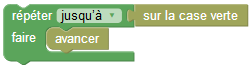
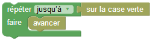
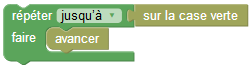
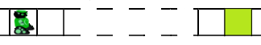

Tutoriel - Boucles tant que / jusqu'à

 

Pour les deux tests suivants, on veut que le même programme permette au robot de rejoindre la case verte :
Le problème, c'est qu'on ne sait pas de combien de cases il doit avancer !
 donc :
On va utiliser une nouvelle sorte de boucle !
Le nombre de répétitions est déterminé à partir d'une condition, on n'a plus besoin de le connaître à l'avance.

Ce bloc exécute en boucle l'instruction "avancer", jusqu'à ce que la condition "sur la case verte" devienne vraie.
ou

Ce bloc exécute en boucle l'instruction "avancer", tant que la condition "pas sur la case verte" est vraie.
A vous ! Choisissez correctement votre boucle !